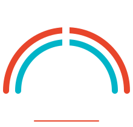

G's 卒業制作 企画書
陸・海・空をつなぐ、世界にひとつだけの旅へ
Sachiko Takahashi
東京都在住
学歴：経営管理修士（MBA）
職歴：外資系製薬会社海外業務、大手重機メーカーや時計メーカーで
貿易・国際物流、飲食店経営
副業：元エアロビクス、ボクササイズ、ラテンビクスインストラクター
現職：住宅宿泊事業者（通称：民泊)/住宅宿泊管理業者・障害者福祉
資格/賞：政策学校一新塾33期主体的市民賞、マスボクシング全国大会
女子の部準優勝、関東道の駅完全制覇賞、一級小型船舶操縦免許、
介護福祉士、介護予防運動指導員
趣味：車中泊旅、DIY、読書、音楽
目的地へ運ばれるだけの旅ではなく、移動している時間そのものに価値を見出したい人へ。
旅をしながら暮らしたい人へ。
規格化された旅では満たされない、"人とのつながりを通じた旅"への欲求に応える。
自分の「ハコ（乗り物）」で、世界中の人と旅の体験を分かち合い、もてなしたい人。
移動手段も、出会う人も、自分の理想の旅を実現したい人。
オーナー自身が案内し、その知識・文化・情熱が体験そのものになる。
ホストの現在地を地図で検索し、その場で合流。計画しない出会いが最高の旅を生む。
旅を通じてホストとゲストがつながり、言語・国籍を超えたコミュニティが自然に育つ。
▶ 再生してご覧ください
卒業制作では、これまでの学習課題を融合させ、"実際にホストやゲストが登録できるMVP"を作る。目的は、TriArkの世界観を視覚的・動的に、分かりやすく魅力的に伝えること。
ゲスト／ホストの役割を分けた会員登録。
活動エリア・体験内容・車両を登録。まず自分がホストとして登録し、必要項目を実体験で検証する。
リアルタイムのメッセージ、予約ステータス（問い合わせ→承認→確定）、既読、連絡先の段階的保護。
活動エリアの天気と気象庁の警報・注意報を自動表示し、催行可否の判断材料を示す。
将来構想として、AIによるリスティング／プロフィール文の作成支援、"必要に応じて翻訳"する多言語コミュニケーションも見据える。
技術構成の詳細は、これから作りながら固めていく段階にある。「完璧な仕様を今示すこと」より「何を作りたいかが明確であること」を重視し、実装は自走しながら判断・改善していく。
認証・チャット・予約フロー・API連携をTriArk MVPとして統合。自分自身をホストとして登録し、リスティング項目を実体験で検証。
コンセプトが直感的に伝わる動的な見せ方と、ブランド世界観の統一。
通しで動くデモに仕上げ、MVPで「動くコンセプト」を提示する。
私はエンジニアになるためではなく、TriArkを実現するために技術を学んでいる。
同じく実体験から生まれ、並行して育てている構想:
・臨床観察記録ログ — 患者・家族目線のAI分析ツール
(息子の闘病記録をAIと分析し、長年の膠着を動かした経験から)
・車中泊DIY女子 EC&コミュニティ — 25年の車中泊とDIYの
実践コミュニティから